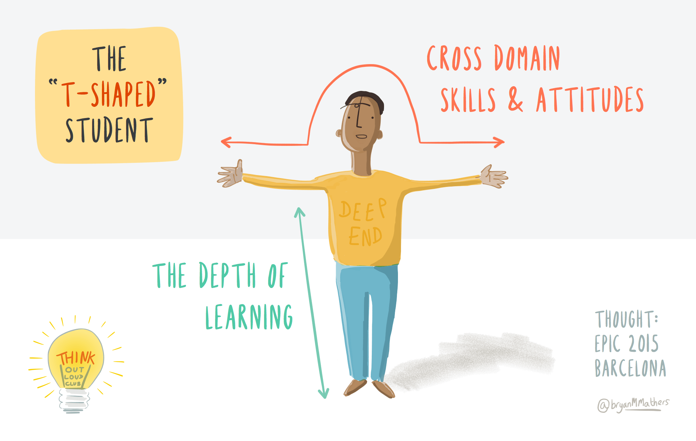
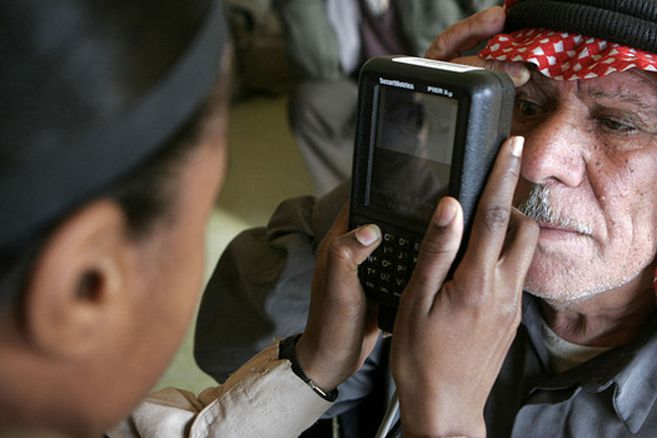
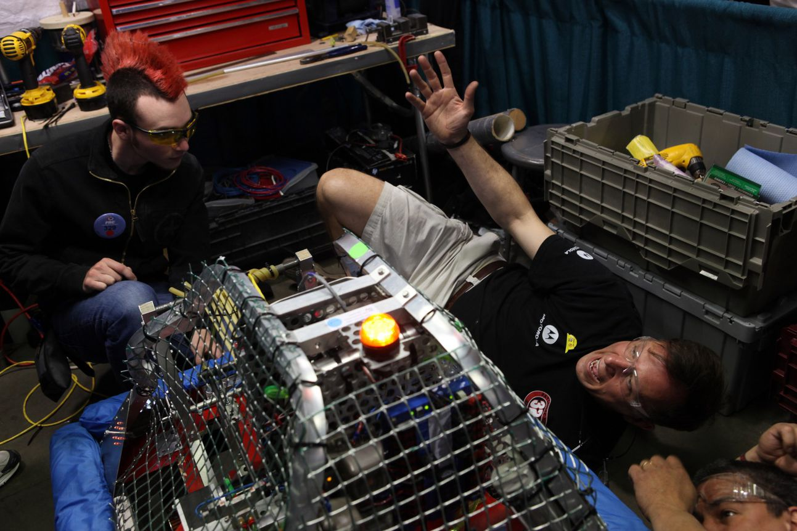

Here's how to view, download, and delete your personal information online
Social media networks know a lot about you. In fact, that's their primary job. They want to collect information about you and use that to sell advertisements that you can't resist. In return for your data, these companies give you a chance to interact with other users and share your life no matter how interesting or banal. Recently, instructions have been floating around the web about how to see the secret interests Instagram thinks you want to see ads about. The results are sometimes hilariously wrong, but they can also be worryingly accurate. Your information is a product that companies leverage.
In a perfect world, this exchange would result in a harmonious civilization in which people find others with similar interests and we enjoy our hobbies in harmony. In real life, however, our information crawls around the dark corners of the web where it's compromised, sold, leveraged, and otherwise abused. And that's not even mentioning what happens when one of these social media sites flickers out of existence and takes all of your stuff with it.
This article provides a quick primer on how to see what data sites have collected about you, as well as how to download and delete it. It's handy information to have before the next site shuts down or accidentally tells a bunch of bad guys your favorite movie and your cellphone number.

What are T-shaped skills?
The term “T-shaped skills” goes back to 1991 David Guest’s article “The hunt is on for the Renaissance Man of computing,” [The Independent (London)]. The concept has been popularised by Tim Brown, CEO and president of the design firm IDEO as an HR-approach to find the right workers for his organization. The goal was to build an interdisciplinary team able to generate new interesting ideas.A “T-shaped person” is a metaphor for depth and breadth of person’s abilities. The vertical bar on the T designates the depth of relevant skills and proficiency in a single area, while the horizontal bar stands for the ability to cooperate across disciplines with professionals in other fields and to apply knowledge in fields of expertise other than one’s own.
Aside from deep tech skills developers have to master “soft skills” such as empathy, problem-solving, adaptability and flexibility, big-picture thinking, willingness to learn, communication, teamwork, critical thinking.

Biometric Technologies are 'Inherently Fallible,' says U.S. Report
Biometric systems – those that identify individuals based on unique biological characteristics like fingerprints, retinal patterns, voice, or facial features – have long been considered the future of security protocols. Technological advances over the past decade in particular have made them much more widespread in practical application, but a new report form the National Research Council says that could be a mistake, as the systems are "inherently fallible."
The report – commissioned by security-inclined bodies including DARPA, the CIA, and the Department of Homeland Security – found that while biometric systems are effective at certain specific tasks, the promise of biometrics has surpassed the actual technological delivery, and that could lead to serious problems as the systems are rolled out more and more widely.
The systems, the report argues, rely on probabilistic results, which by definition are imbued with a certain degree of uncertainty. Further, biometrics aren't static; the characteristics largely perceived as positive identifiers actually can change over a person's lifetime due to age, disease, or other factors. This can lead to false-positives or an inability for a system to make an ID at all. Further, the systems' effectiveness is as reliant on human competence as it is on the technology itself.
This kind of inconsistency is obviously not ideal in situations where making a positive ID is critical to security of both information and personnel. But, the report says, that doesn't mean biometric systems should be scrapped. What it does mean is that careful systems-level considerations need to be made when integrating biometrics into a security portfolio – and that security schemes need to be exactly that: portfolios.
Biometrics, uncertain though they may be, are still effective if employed in the proper ways, but there need to be secondary measures in place to back them up, and operators should employ them with the expectation that they will make errors, in some cases frequently. Because nobody is perfect, not even security tech's next big thing.

Seeking New Defense Robots, Darpa Gives Fabrication Technology To High Schoolers
Taking a page from advertising strategy, DARPA is hoping to get 'em while they're young. The military's mad-science wing wants various organizations to put manufacturing equipment in 1,000 high schools around the world, part of a new program called "MENTOR" — Manufacturing Experimentation and Outreach. The partnership will include new prize-based challenges to inspire a new generation of defense manufacturers.
President Obama has been pushing to increase student interest in science and engineering, announcing earlier this week that he wants 1,000 new STEM teachers. The MENTOR program addresses that need, but it's also part of DARPA's Adaptive Vehicle Make program, which is intended to speed up development of future defense vehicles.
Challenges will involve designing and building things like go-carts, mobile robots and small unmanned aircraft, according to the DOD. While the program is aimed at bolstering the U.S. manufacturing industry, DARPA wants international students to participate as well.
Potential contractors would have to offer programmable manufacturing equipment that can be used for a variety of tasks, like 3-D printers or other platforms that can build cyber-electro-mechanical systems. Ten schools will be involved within two years, with 100 by the third year and 1,000 by the fourth, according to the draft solicitation.